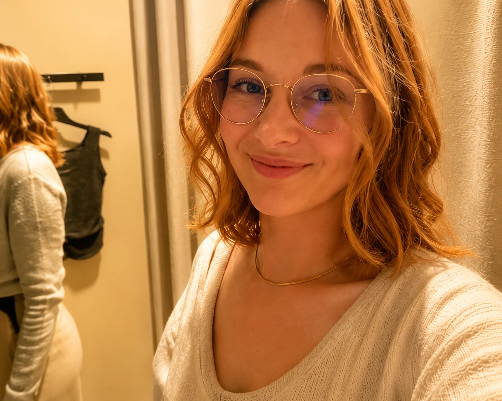

STAGE
Deine Bühne.

Schauspielkurse, Workshops und Einzelcoachings für Kinder, Jugendliche und Erwachsene.
Mehr entdeckenSchauspiel. Gesang. Geschichten.
Entdecke, was in dir steckt und bringe deine Kunst auf die Bühne – deines Lebens.
Schauspielkurse, Workshops und Einzelcoachings für Kinder, Jugendliche und Erwachsene.
Mehr entdecken
Gesangsunterricht, Vocal Coaching und meine eigene Musik als Sisa – Songs, Texte und Videos.
Mehr entdecken
Filmprojekte, Drehbücher und Geschichten, die ich als Autorin und Regisseurin entwickle.
Mehr entdecken
Wer ich bin, was mich bewegt und wie Bühne, Musik und Geschichten bei SCHAMUR zusammenkommen.
Mehr entdeckenSchauspiel, Stimme und Storytelling gehören bei SCHAMUR zusammen. Nicht als Theorie – sondern als etwas, das du ausprobieren, trainieren und sichtbar machen kannst.

Improvisation, Rollenarbeit, Präsenz, Ausdruck, Kamera und gemeinsames Spielen.
Stage entdecken →
Stimme, Technik, Songinterpretation, Bühnenpräsenz und meine eigene Musik als Sisa.
Voice entdecken →Drehbücher, Filmideen, Regie, Projektentwicklung und Geschichten, die auf die Leinwand wollen.
Story entdecken →Auf meiner About-Me-Seite findest du meinen Weg, meine Ausbildung, Theater- und Leitungserfahrung sowie meine aktuellen kreativen Projekte.
„Die Bühne wartet nicht auf Perfektion. Sie wartet auf dich.“